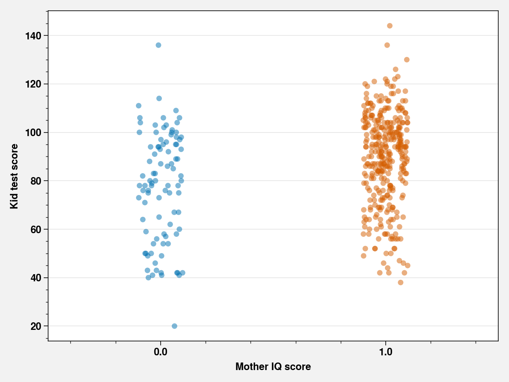
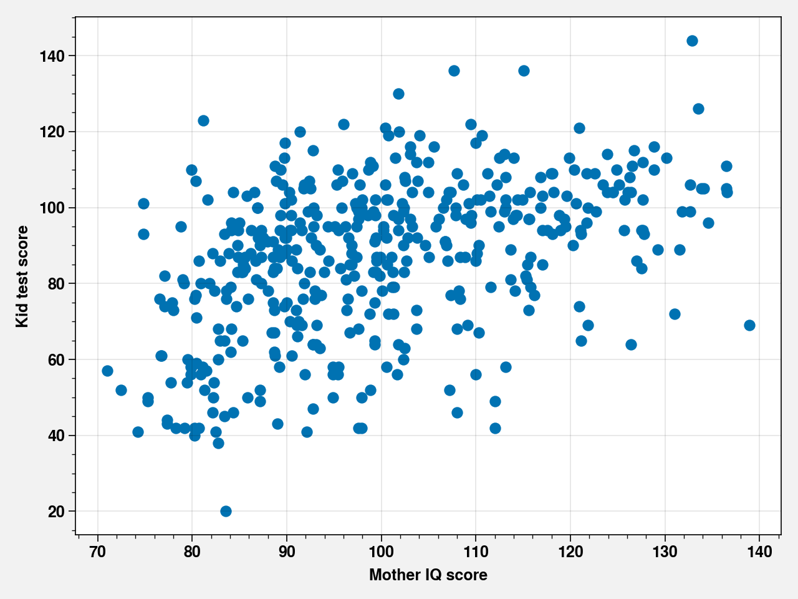

Chapter 3 - Linear regression: the basics¶
%pylab inline
import pandas as pd
import proplot as plot
import seaborn as sns
import statsmodels.api as sm
from scipy import stats
plt.rcParams["axes.labelweight"] = "bold"
plt.rcParams["font.weight"] = "bold"
Populating the interactive namespace from numpy and matplotlib
/opt/hostedtoolcache/Python/3.7.7/x64/lib/python3.7/site-packages/proplot/config.py:1454: ProPlotWarning: Rebuilding font cache.
kidiq_df = pd.read_csv("../data/kidiq.tsv.gz", sep="\t")
kidiq_df.head()
| kid_score | mom_hs | mom_iq | mom_work | mom_age | |
|---|---|---|---|---|---|
| 0 | 65 | 1.0 | 121.117529 | 4 | 27 |
| 1 | 98 | 1.0 | 89.361882 | 4 | 25 |
| 2 | 85 | 1.0 | 115.443165 | 4 | 27 |
| 3 | 83 | 1.0 | 99.449639 | 3 | 25 |
| 4 | 115 | 1.0 | 92.745710 | 4 | 27 |
Figure 3.1¶
fig, ax = plt.subplots()
sns.stripplot(x="mom_hs", y="kid_score", data=kidiq_df, ax=ax, alpha=0.5)
ax.set_xlabel("Mother IQ score")
ax.set_ylabel("Kid test score")
fig.tight_layout()

Figure 3.2¶
fig, ax = plt.subplots()
ax.scatter(kidiq_df["mom_iq"], kidiq_df["kid_score"])
ax.set_xlabel("Mother IQ score")
ax.set_ylabel("Kid test score")
fig.tight_layout()

Code 3.4.1¶
model = sm.OLS(kidiq_df["kid_score"], sm.add_constant(kidiq_df[["mom_hs", "mom_iq"]]))
results = model.fit()
Code 3.4.2¶
print(results.summary())
OLS Regression Results
==============================================================================
Dep. Variable: kid_score R-squared: 0.214
Model: OLS Adj. R-squared: 0.210
Method: Least Squares F-statistic: 58.72
Date: Sat, 20 Jun 2020 Prob (F-statistic): 2.79e-23
Time: 19:53:24 Log-Likelihood: -1872.0
No. Observations: 434 AIC: 3750.
Df Residuals: 431 BIC: 3762.
Df Model: 2
Covariance Type: nonrobust
==============================================================================
coef std err t P>|t| [0.025 0.975]
------------------------------------------------------------------------------
const 25.7315 5.875 4.380 0.000 14.184 37.279
mom_hs 5.9501 2.212 2.690 0.007 1.603 10.297
mom_iq 0.5639 0.061 9.309 0.000 0.445 0.683
==============================================================================
Omnibus: 7.327 Durbin-Watson: 1.625
Prob(Omnibus): 0.026 Jarque-Bera (JB): 7.530
Skew: -0.313 Prob(JB): 0.0232
Kurtosis: 2.845 Cond. No. 683.
==============================================================================
Warnings:
[1] Standard Errors assume that the covariance matrix of the errors is correctly specified.